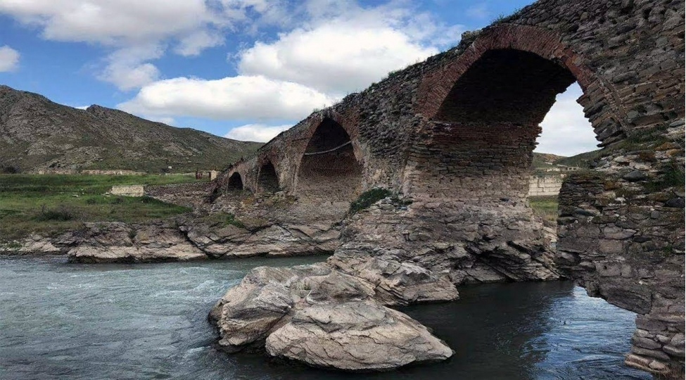
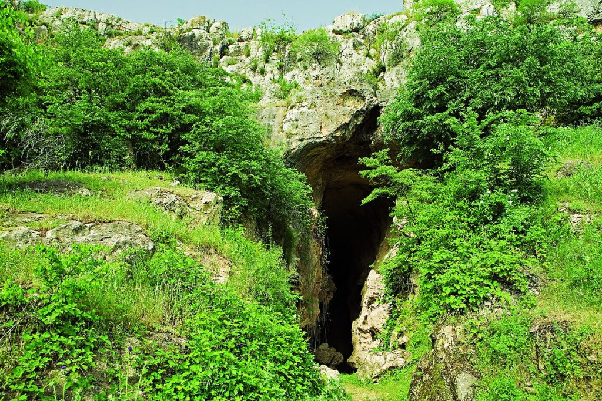
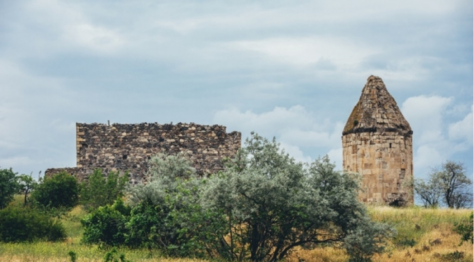

Şuşa Azərbaycanın ən gözəl şəhərlərindən biridir. Bu şəhərin adını bildirən “Şuşa” sözü bu diyarın saf, qeyri-adi dərəcədə şəffaf dağ havasının rəmzi olan “şüşə” sözündəndir. Təbiət Şuşaya unikal bulaqlar və mineral sular bəxş etmişdir. Turşsu, İsabulağı, Səkinə bulağı, İsti bulaq, Soyuq bulaq, Çarıx bulaq, Saxsı bulaq, Qırx bulaq, Yüz bulaq və başqa bulaq adları bunu sübut edir. Şuşada memarlıq abidəsi sayılan 170 bina və 160 sənət abidəsi vardı. Məşhur “Gəncə darvazalan”, Qala divarları, Qarabağ xanlarının imarəti, Natəvanın ev-muzeyi, şair və rəssam Mir Mövsüm Nəvvabın evi, görkəmli bəstəkar Üzeyir Hacıbəyovun ev-muzeyi, məşhur müğənni Bülbülün ev-muzeyi, şair Vaqifin məqbərəsi bu qəbildəndir.

Cənubi və Şimali Azərbaycan dedikdə ilk növbədə ağla Xudafərin körpüsü gəlir. Xudafərin körpüsü haqqında ilk məlumat VIII-IX əsrlərə aiddir. Xudafərin körpüsü Cənubi Azərbaycanla Şimali Azərbaycanın orta əsr şəhərlərini birləşdirən, karvan ticarət yolu üzərində tikilib. O, həm də mühüm hərbi-strateji əhəmiyyət kəsb edir. Xudafərin körpüsü bir qeyrət körpüsüdür, xalqımızın tarixi birliyini zaman-zaman yada salır.

Azıx mağarası Azərbaycan ərazisində olan poliolit dövri abidələrindən sayılır. Azıx mağarası Hadrut rayaonunda, Tuğ çökəkliyini kəsən Quruçay dərəsinin sol sahilindəki sıldırım qayalıqda yerləşir. Azərbaycanda bu abidə ilə bağlı 10 kitab, 200 dən çox elmi məqalə çap olunmuşdur.Mağaranın 7-10-cu təbəqələri ən qədim dövrü əhatə edir və sübut edir ki buraya ilk insanlar 2 milyon il bundan qabaq ayaq basmışlar. Bu dövrə aid tapıntıların bir çox xüsusiyyəti bu tapıntıları başqa mədəniyyətlərdən fərqləndirdiyinə görə, bu mədəniyyətin müstəqil bir mədəniyyətin qalığı olması fikrini əsaslandırır və ona görə də bu tapıntılar Quruçaqy mədəniyyəti adlandırılır. Azıx mağarası eyni zamanda dünyada ilk ocaq izi və tikili qalıqların tapıldığı yerdir.

Zəngilan rayonu şimaldan Qubadlı və Cəbrayıl rayonları, cənubdan və şərqdən İran, qərbdən Ermənistanla həmsərhəddir. Rayonun Məmmədbəyli kəndində olan türbə dövrümüzə qədər salamat gəlib çatan abidələrdəndir. Günbəzin yuxarı hissəsi azca dağılmışdır. Türbə piramidal günbəzlərlə örtülmüş səkkizgüşəli prizmadan ibarətdir. Türbənin əsas qapısı şimal-qərb tərəfdədir. Onun üzü çox sadə işlənmişdir. Üz müstəvilərinin əsas hissələri batıqdır. Buna görə də türbənin küncləri bir qədər çıxıntılıdır. Türbənin qapısı yerdən 1,8 m. hündürlükdədir. Orada yeraltı sərdabədə mövcuddur. Məmmədbəyli türbəsi Azərbaycanın bürcvari türbələrinə bənzəyir. Abidənin karnizi diqqəti cəlb edir. O, qara rəngi daşdan işlənmişdir.